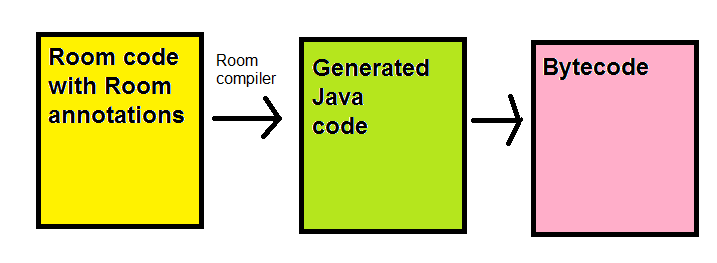

Mobile Application Development - Part 7
SQLite and Room
This week we will look at Android on-board databases by taking
a look at SQLite and the Room Persistence API.
What is SQLite?
- SQLite (see sqlite.org)
is a simple on-board client-side database
- It does not require a full
database management system setup (like MySQL or Oracle) and its attendant client-server
architecture
- SQLite databases can be easily embedded into any pure client-side application,
such as a desktop Java application or an Android app.
Using an SQLite database in Android
- Traditionally, the SQLite API was used to query an SQLite
database on Android
- However, this requires a lot of repetitive "boilerplate" code to
perform queries
- It is recommended instead to use the Room Persistence Library
- Room is a higher-level API which takes advantage of annotations
to allow you to write more concise code
Annotations
- Annotations are a language feature of both Java and Kotlin which allow
you to add "meta-code" which are processed before the code
is compiled
- Annotations begin with @ followed by an annotation class name
- Annotations are processed either by the compiler or by third-party
software
Annotation examples
-
@Override
In Java, this specifies that the following method will override a method of the
superclass. If it does not, the compiler will generate an error.
In Kotlin, this is not necessary as the override keyword does the
same thing.
-
@Deprecated
Marks that the method following is deprecated. Any other code calling this
method will generate a compiler warning, informing the developer that the
method is deprecated (outdated, with a better replacement available)
- Example of both (Java)
public class Cow extends Animal {
// If there's no makeNoise() in Animal, compiler will give an error
@Override
public void makeNoise() {
System.out.println("Moo!");
}
@Deprecated
public void moo() {
System.out.println("Moo!"); // intention is that moo() has been deprecated in favour of makeNoise()
}
public static void main (String[] args) {
Cow cow = new Cow();
cow.moo(); // compiler generates deprecation warning
}
}
- This code is specifying that makeNoise() must override the
version of makeNoise() declared in the superclass, and that moo()
is deprecated, i.e the code in the main():
Cow cow = new Cow();
cow.moo();
would generate a compiler warning about using a deprecated method.
Room and annotations
- In the case of Room, annotations are used to allow us to develop
more concise code
- Room annotations consist of classes which are part of the Room library,
and are processed by the Room compiler into standard, albeit
long-winded, Java code
- This Java code is then compiled to bytecode in the normal way
- The process is shown below:

Using Room
Components of a Room application
A Room application with one database table
would contain, as a minimum, these four classes:
- The data entity: class representing your actual data, e.g
a Student class to represent a student record in a students
table.
- The DAO or Data Access Object:
- A class providing access to your database from the rest of your
code
- Contains a series of methods which perform given SQL statements
- e.g. a getById() method which will perform a SELECT statement
to retrieve a record using its ID
- External code can call the methods of the DAO, and thus can be
kept clean and uncluttered by SQL, as all the SQL code is encapsulated
within the DAO
- A class representing the actual database as a whole
- Your main activity
The data entity
- We'll start with the data entity
- As seen above, this is a class representing the entities stored within
your database table
- e.g.:
import androidx.room.Entity
import androidx.room.PrimaryKey
@Entity(tableName="students")
data class Student(@PrimaryKey(autoGenerate = true) val id: Long, val name: String, var course: String, var mark: Int)
- This is a simple data class, but has two Room annotations:
- @Entity: specifies the database table which will be used to
store objects that this class represents
- @PrimaryKey: specifies which property will coincide with
the primary key in the database. Note the autoGenerate = true
argument, which will autogenerate the primary key as the next available
integer.
- The columns in the table will have the same names as the properties
(i.e. id, name, course and mark)
The DAO (Data Access Object)
The database object
- Finally, here is the database class
- Its role is to encapsulate the database as a whole
- It needs to create the database object as a singleton
(single instance object), to avoid creating unnecessary multiple
copies of the database
- To do this, we use Kotlin companion objects
- A companion object is an object which is attached to
a class as a whole, rather than specific instances of a class
- It has roughly the same role as static methods in Java
Example database
import android.content.Context
import androidx.room.Database
import androidx.room.Room
import androidx.room.RoomDatabase
@Database(entities = arrayOf(Student::class), version = 1, exportSchema = false)
public abstract class StudentDatabase: RoomDatabase() {
abstract fun studentDao(): StudentDao
companion object {
private var instance: StudentDatabase? = null
fun getDatabase(ctx:Context) : StudentDatabase {
var tmpInstance = instance
if(tmpInstance == null) {
tmpInstance = Room.databaseBuilder(
ctx.applicationContext,
StudentDatabase::class.java,
"studentDatabase"
).build()
instance = tmpInstance
}
return tmpInstance
}
}
}
Example database - explanation
- We need to precede the class with the @Database annotation
- Our database extends from RoomDatabase
- We have to provide an abstract method to return the DAO
- The outside world, such as our Activity, will call this
- We then begin our companion object
- This contains our single instance of the StudentDatabase
object (as we are using the singleton pattern)
- Using standard singleton logic, the getDatabase() method
tests if the instance is null; if it is, we create the instance and
return it, if it isn't, we simply return it.
- This will ensure that there will only ever be one instance of
our StudentDatabase
- Note how we specify the database name (studentDatabase) when we
create our database object
Our main activity
- Finally, we need a main activity for our application
- This needs to obtain the database (using the getDatabase() method
of the companion object of our database class
- Once we have our database, we can obtain the DAO and call its methods
- Note that operations to query the database have to go in a
separate, background thread so that the user interface doesn't
become unresponsive while waiting for the database transactions to take
place
- We can use coroutines for this
- Therefore, we will quickly look at coroutines before looking at the
main activity
Asynchronous operations in contemporary Kotlin Android
applications
- One key feature of contemporary Kotlin Android apps
is the ability to write concise asynchronous
code, to perform operations such as connecting to a remote server
- Previously this was done in Android with AsyncTask,
or even using raw threads
- A thread is a separate strand of execution which permits
tasks to run simultaneously
- Typically you would have a main thread which manages the GUI, and
additional threads to manage background tasks such as network
communication
- However Kotlin allows you to achieve the same effect with
coroutines
Introduction to coroutines
- A coroutine is a function that can run in either the foreground
or the background, and can be suspended (paused) to allow
another operation to take place
- Each coroutine runs in a context
- The context determines whether the coroutine runs in the
foreground or background
- Typically, each context would run in a separate thread or group
of threads (for those of you who have done multithreading)
- In Android, there are three available contexts:
- Dispatchers.Main - always runs on the foreground in
Android, GUI code would go in here.
- Dispatchers.IO - a background context optimised for
input/output operations, for example network communication.
- Dispatchers.Default - a background context optimised for
heavy calculations and processing which does not use input/output.
- We can switch between contexts and in this way, run some of
our code on the main thread and some in the background
Coroutine scopes
- Coroutines must be launched from a scope (we will
explore scope in more depth later)
- You can create this yourself in Android but alternatively, can use
the LifecycleScope
- The LifecycleScope is part of the new Android lifecycle components
and allows you to to easily launch coroutines from any Android component with
a lifecycle (e.g. Activity, Fragment)
- Full example of launching and using a coroutine from an activity using
LifecycleScope:
import androidx.appcompat.app.AppCompatActivity
import android.os.Bundle
import androidx.lifecycle.lifecycleScope
import kotlinx.coroutines.Dispatchers
import kotlinx.coroutines.launch
import kotlinx.coroutines.withContext
class MainActivity: AppCompatActivity() {
override fun onCreate(savedInstanceState: Bundle?) {
super.onCreate(savedInstanceState)
lifecycleScope.launch {
// This will run in the Dispatchers.Main context
withContext(Dispatchers.IO) {
// This will run in the Dispatchers.IO context
// Asynchronous operations, such as querying a database
// or communicating with a server, would go here...
}
}
}
}
Jetpack components required for Android coroutine development
Main activity - basic example
import androidx.appcompat.app.AppCompatActivity
import android.os.Bundle
import androidx.lifecycle.lifecycleScope
import kotlinx.android.synthetic.main.activity_main.*
import kotlinx.coroutines.Dispatchers
import kotlinx.coroutines.launch
import kotlinx.coroutines.withContext
class MainActivity: AppCompatActivity() {
override fun onCreate(savedInstanceState: Bundle?) {
super.onCreate(savedInstanceState)
setContentView(R.layout.activity_main)
val db = StudentDatabase.getDatabase(application)
btnSearch.setOnClickListener {
lifecycleScope.launch {
var student: Student? = null
val id = studentIdTextField.text.toString().toLong()
withContext(Dispatchers.IO) {
student = db.studentDao().getStudentById(id)
}
student?.apply {
txtName.setText(name)
txtCourse.setText(course)
}
}
}
}
}
Main activity - explanation
- This example shows basic search-by-ID functionality
- We launch a coroutine, read in the ID from an input box, and then
switch to the Dispatchers.IO context to search for the student in the
database
Viewing the database from Android Studio
You can view your database from Android Studio by selecting View-Tool Windows-Database Inspector.
Exercise
Develop an application to store music in an SQLite database using Room.
You'll need four classes: the data entity, the DAO, the database and the
main activity. You'll need these dependencies in your build.gradle:
implementation 'androidx.core:core-ktx:1.1.0'
implementation 'androidx.lifecycle:lifecycle-runtime-ktx:2.2.0'
implementation 'androidx.room:room-runtime:2.2.3'
implementation 'androidx.room:room-ktx:2.2.3'
kapt 'androidx.room:room-compiler:2.2.3'
Also, add this line to the top of the app build.gradle:
apply plugin: 'kotlin-kapt'
The Activity should have a layout with four fields: ID, Title, Artist and Year,
with four buttons (Search by ID, Add, Update, Delete). These buttons should
have the following effects. Each should call an appropriate method in your
DAO. These buttons should perform the following operations:
- Add - add the Title, Artist and Year in the fields to a "hits" table in an
SQLite database. Once added, the ID field should be filled in with the
allocated ID. (DAO insert methods will return the new ID as a Long as
long as it's declared in the method signature - see the example)
- Search by ID - find the record with the ID in the ID field. Display the
found song in the other three fields (title, artist, year). An error (a
toast is fine) should appear if that song does not exist.
- Update - should update the details of the song currently displayed in
the four fields. Again display an error if the song with that ID does not
exist.
- Delete - delete the song with that ID. Again, display an error if the
song with that ID does not exist.
Further reading
Save data in a local database using Room - Android documentation on Room.